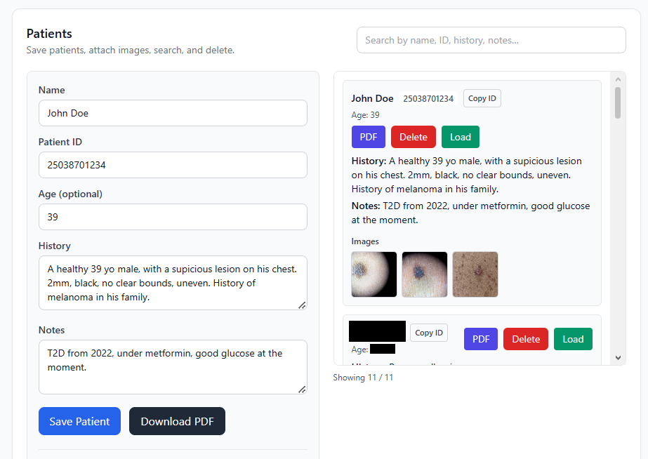
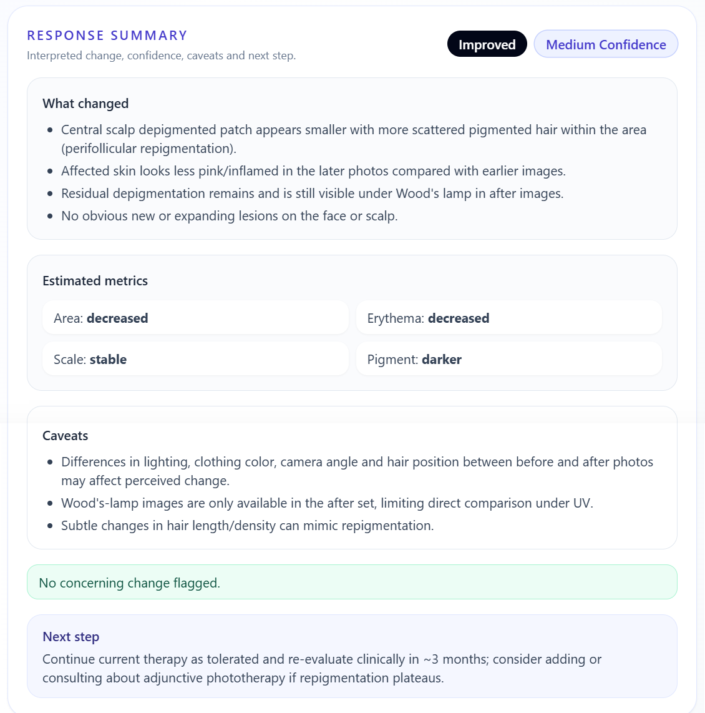
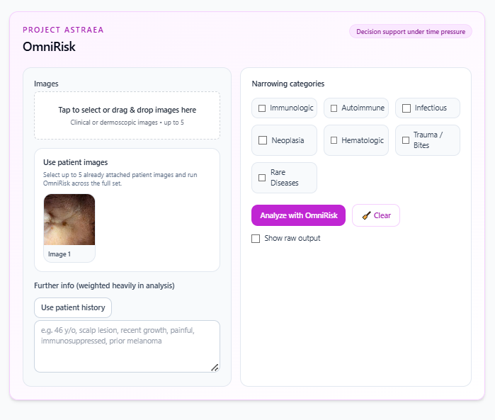

Structured risk support
Get a readable risk estimate, confidence range, and a result that is easy to review quickly during a busy clinic day.
Physician-led dermatology workflow platform
Review lesions, organize differentials, and document cases in one place — without losing time between image, impression, and next step.
Built by a physician for real clinical workflow and clarity — not generic AI theatre. Designed to reduce friction during real clinic flow. Shaped by real clinical pressure, where hesitation has a cost.
Product Preview
Real outputs from the platform — clear, practical, and made to be reviewed quickly.
Click any image to expand

Take history, upload images, save patient record

Get clear results and output based on guidelines, instantly

Track lesion evolution
From image to assessment to documentation, without bouncing between tools.
Flagship module
A clinician-guided assessment tool that combines image analysis with a growing real-world case database, helping you reach a structured, usable impression faster.
Designed for moments where time pressure changes how decisions are made.

Get a readable risk estimate, confidence range, and a result that is easy to review quickly during a busy clinic day.
Bring the image together with symptoms, timing, medications, and history so the output feels closer to how dermatologists actually think.
OmniRisk is not meant to stay frozen as a generic model. It is built on a curated clinical case database, so results become more aligned with real dermatology over time.
Core platform
OmniDerma is built to cut wasted time across the visit — from lesion assessment and differential support to documentation and follow-up review.
Image review
Helps you assess suspicious or complex lesions quickly, without losing the structure needed for careful review.
Decision support
Organizes the differential into something usable at a glance, while keeping physician judgment at the center.
Acute care
Frames urgent dermatologic presentations with focused, practical output that can be reviewed fast when time matters.
Documentation
Returns information in a format that is faster to read, easier to communicate, and easier to save.
Follow-up
Supports before-and-after review so changes over time are easier to judge and treatment response is easier to follow.
Always Evolving
Built on a growing set of real clinical cases, curated by medical professionals, allowing the system to move beyond generic outputs and align more closely with real dermatology practice.
How it works
Capture or upload a clinical or dermoscopic image directly inside the platform.
Enter symptoms, duration, medication history, and other clinically useful details.
OmniDerma processes visual and contextual information into structured support output.
Interpret the results in clinical context, compare over time, and save the case workflow.
Get in touch
Whether you are a clinician, practice, health system, collaborator, or investor, we would be glad to show you how OmniDerma can fit into real dermatology workflow.
Opens your email to contact the team directly.
Built with care
Security & Privacy
Access is restricted through authenticated accounts, with all data scoped to individual users.
OmniDerma is designed to minimize unnecessary storage of sensitive information while keeping clinical workflows functional.
The platform is currently in a controlled-use phase and is evolving toward full clinical-grade security and compliance as it grows.
Medical Disclaimer
OmniDerma is a physician-led, AI-assisted clinical support tool intended for training and educational purposes only. The platform does not provide medical diagnosis and must not be used as a standalone diagnostic system. All outputs require interpretation by qualified medical professionals.
The gold standard for the evaluation of skin neoplasms remains clinical assessment followed by excision and histopathological examination where indicated.
AI-generated analyses may be inaccurate or incomplete. Clinical decisions must always be based on current medical guidelines, physician judgment, and individual patient context.